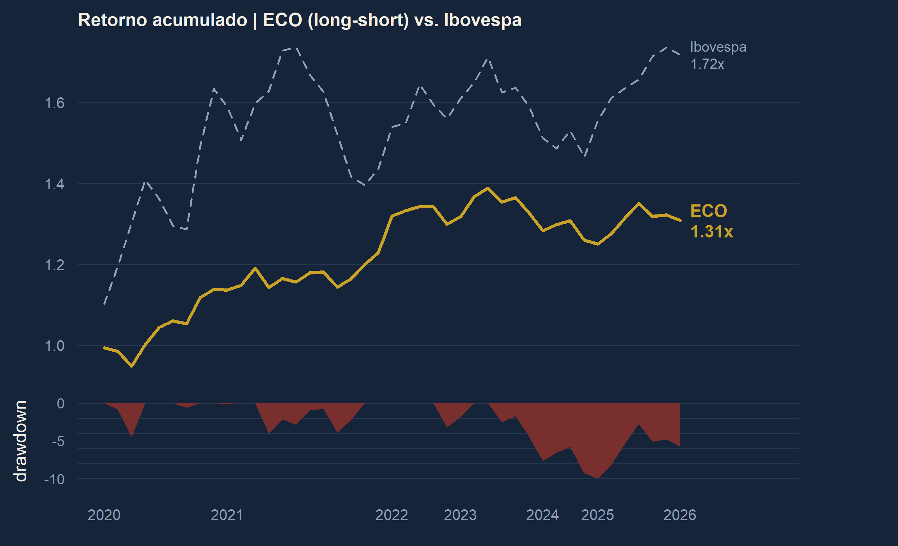

Long / short pela demanda residual dos fundos identificados como líderes numa rede de pares replicantes — o que sobra do ajuste de carteira depois de remover, via λ, o componente puramente mecânico (reação ao preço). Esse excedente é a convicção real do fundo, e ela ecoa no preço 3 meses depois: a defasagem real que a divulgação da CVM impõe.
O peso reage em parte só ao preço do ativo. λ=0,0365 separa essa reação mecânica do resto — o resíduo é convicção real, não aritmética de carteira.
Na rede de replicantes, alguns fundos antecipam seus pares "seguidores" — a demanda residual desses líderes carrega informação real, não ruído.
CVM divulga carteiras com ~90 dias de atraso — h=3 é o horizonte que existe de verdade, não o mais bonito no teste.
Todo ajuste de carteira tem duas partes: reação mecânica ao preço, e o que sobra — a convicção do gestor. O λ do TCC separa as duas; o robô escuta só o que sobra, só dos fundos que a rede de replicantes identifica como líderes.
Esse excedente ecoa no preço 3 meses depois, quando o mercado, com a defasagem real da CVM, enxerga o que os líderes já sabiam.
Cada mês passa por três camadas, direto do modelo do TCC: o Modelo estima o peso esperado de cada fundo em cada ação, o λ isola o componente mecânico do ajuste real, e o Sinal agrega o que sobra — só entre os fundos-líderes da rede de replicantes.
Peso esperado do fundo na ação, estimado por regressão logística ativo-mês (AUM, cotas, indicador FIC, fluxo de captação, beta do fundo) — a mesma modelagem da Etapa 1 do TCC. O desvio entre o esperado e o real é a demanda bruta d.
O peso muda mecanicamente com o retorno relativo ativo/fundo, mesmo sem decisão ativa. λ (estimado por regressão através da origem) mede quanto da demanda d vira ajuste mecânico — o resíduo u é convicção real.
Pares fundo-fundo com correlação ≥0,6 na série de u formam a rede de replicantes; força de liderança mede quem antecipa quem. Só o quartil superior entra no sinal.
O ECO entrega retorno modesto mas com drawdown de apenas 10% — menos da metade do Ibovespa no mesmo período — e taxa de acerto de 60% mês a mês, consistente com um sinal estatisticamente fino, não com um "big bet" direcional.

O drawdown raso (painel inferior) é a marca do sinal: mesmo nos piores meses, a perda nunca passou de 10% — muito abaixo do Ibovespa no mesmo período. Isso vem do teste estatístico subjacente ser genuinamente robusto (t=2,56, autocorrelação ~0), não de uma aposta concentrada.
Honestidade sobre o beta: 0,19 é estatisticamente significante (p=0,014) — o ECO não é totalmente mercado-neutro, e o alfa isolado não passa em significância (p=0,34) nesta janela de 43 meses com dado completo.
O teste Fama–MacBeth (80 meses, 2017–2026) é a evidência principal; o backtest aqui é a tradução em portfólio, com a limitação natural de cortes fixos pré-2020.
Backtests quebram de formas conhecidas: horizonte escolhido a posteriori, efeito que só existe num sub-período conveniente, ausência de contraste. Cada linha ataca um desses modos — com a mesma régua estatística (Fama–MacBeth + Newey–West) usada para descartar os dois candidatos concorrentes antes deste.
| Teste | Pergunta | Resultado |
|---|---|---|
| Horizonte h=3 (principal) | O excedente dos líderes ecoa no preço na defasagem real da CVM? | t=2,56 p=0,012 |
| Horizonte h=1 | O efeito já existe 1 mês depois? | Fraco, direção oposta t=−1,54 p=0,128 |
| Horizonte h=6 | O efeito persiste além de 3 meses? | Nulo t=1,16 p=0,248 |
| Sub-período pré-dez/2023 | O efeito é estável ao longo dos 10 anos? | Sim, 69 meses t=3,04 p=0,003 |
| Sub-período pós-dez/2023 | Confirma nos meses mais recentes? | Inconclusivo (n=10) t=0,47 p=0,652 |
| Candidato concorrente — HHI/crowding | Concentração de posse prediz volatilidade futura? | Descartado sob NW t: −2,14→−1,21 |
| Candidato concorrente — fluxo direto "replicantes" | Pressão de fluxo entre líder-seguidor prediz retorno diretamente? | Descartado sob NW t=1,07 p=0,35 |
A IA generativa do ECO não escolhe o vencedor — ela gera, testa e audita a própria base de dados antes de confiar em qualquer resultado. O achado final só foi aceito depois de a IA encontrar e corrigir uma lacuna real na cobertura temporal do modelo de Etapa 1 do TCC.
Um sinal isolado e bonito pode ser artefato de correlação cruzada, não fato econômico. A IA formulou 10+ sinais candidatos e testou cada um com Fama–MacBeth + Newey–West — a correção que, sozinha, derrubou 2 candidatos com aparência forte antes deste.
Esse crivo é o que separa "achamos algo" de "sobrevive ao teste mais rigoroso que sabemos aplicar".
Reconstruindo a base de previsão de peso (Etapa 1 do TCC), a IA encontrou a base com cobertura mensal incompleta pós-2022 — poucos meses de 2022 a 2025 estavam presentes. O resultado só foi aceito depois de reconstruir a base e confirmar que o efeito se mantém com cobertura real em todos os 10 anos (2017–2026), não só numa fatia conveniente.
A IA reestimou λ, implementou Fama–MacBeth/Newey–West e o backtest, com verificação numérica em cada etapa — incluindo checar, explicitamente, se um resultado promissor sobrevivia à correção de cobertura antes de ser aceito. A equipe definiu a régua e julgou cada descarte.
A IA não decide sozinha quando um dado incompleto invalida um achado — esse julgamento, e a decisão de reconstruir a base antes de confiar no resultado, permaneceu humano.
Confirmar o efeito com mais meses pós-2023 conforme a amostra cresce; custo de transação/liquidez explícitos; reduzir a exposição a beta residual (0,19).
Beta de mercado não-nulo; sub-período pós-2023 ainda inconclusivo (baixo n); teste único, sem correção formal de múltiplas comparações.